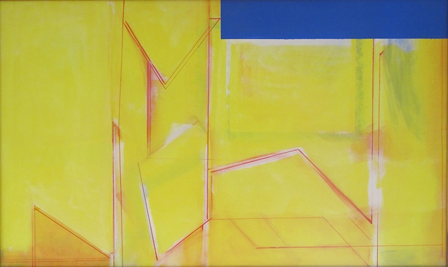

Upon returning from a five-week trip to Italy to study perspective in 1978, Rubello begins considering the possibility that paintings might actually "come out from the wall." Blue Cut, a turning point in his career, is the first work he paints with this idea in mind.
After making a first pass at the canvas, Rubello writes that he "broke up the atmospheric space and initiated a pure sky blue rectangle at the top right hand corner....This presented an implied separation from the picture plane. The blue rectangle created a blue cut interrupting the two dimensional plane. This pure color opposed the rest of the painting."12
Blue Cut advances Rubello's concern with forms and spatial relationships evident in his earlier, more rigidly geometric paintings, like Color Cubes, and its implied dimensionality prefigures his later, literally three-dimensional paintings.
See DIMENSIONAL PAINTING .